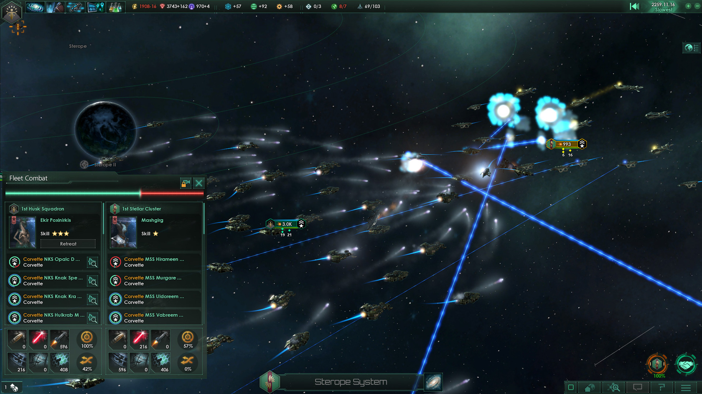

Les Crises Galactiques

En fin de partie (vers l'an 2400–2450), une crise majeure émerge et menace l'existence même de toute vie dans la galaxie. Tous les empires doivent s'unir, ou périr.
Un essaim d'insectoïdes extrasolaires surgit depuis le bord de la galaxie. Ils consomment tout sur leur passage et sont pratiquement impossibles à négocier. Leur seule faiblesse : les armes psi et les radiations de type gamma.
Des entités d'une dimension parallèle ouvrent des portails dimensionnels dans votre galaxie. Leurs vaisseaux sont extraordinairement résistants aux boucliers standard. Seules les armes à énergie cinétique et les torpilles les endommagent efficacement.
Un empire de machines rebelles se retourne contre toute vie organique. Ils se renforcent en capturant des systèmes et en construisant une forteresse impénétrable. Ironiquement, les empires de machines joueurs peuvent eux-mêmes déclencher cette crise.
Deux Empires Dormants (anciennes civilisations titanesques) se réveillent et se déclarent la guerre. Les autres empires sont sommés de choisir leur camp. Ce n'est pas techniquement une crise de fin de partie, mais elle peut se révéler tout aussi dévastatrice.
Les DLC Essentiels
Stellaris suit le modèle Paradox : chaque DLC payant s'accompagne d'un patch gratuit qui améliore le jeu de base. Voici les extensions les plus importantes :
Utopia (2017)
Introduit les voies d'ascension, les mégastructures (Sphère de Dyson, Anneau-monde), les empires de Ruche et les traditions avancées. Considéré comme le DLC le plus fondamental après le jeu de base.
Galactic Paragons (2023)
Révolutionne le système de dirigeants avec le Conseil Impérial, des leaders uniques narratifs (les Paragons), des rôles personnalisés et une progression des personnages. Indispensable pour l'immersion.
Synthetic Dawn (2017)
Permet de jouer en tant qu'Empire de Machines : civilisation entièrement robotique, immortalité des leaders, pas de nourriture. Introduit aussi la rébellion des IA contre les empires organiques.
Leviathans (2016)
Ajoute les Gardiens (créatures spatiales géantes à combattre) et la Guerre au Paradis. Contribue massivement au sentiment d'un univers vivant et dangereux.
MegaCorp (2018)
Jouer en tant que corporation galactique avec des filiales sur les planètes étrangères. Nouveau modèle économique basé sur le commerce et les crédits de consommation.
BioGenesis (2025)
Le dernier grand DLC : ingénierie de vaisseaux vivants, terraformation avancée d'écosystèmes entiers, nouveaux outils génétiques. Renforce massivement la voie d'ascension biologique.
Guide du Débutant
Explorez vite
Envoyez vos vaisseaux scientifiques dans toutes les directions dès le départ. Les bonnes planètes et les points de passage stratégiques se font vite revendiquer par les voisins.
Ne surétendez pas
Coloniser trop vite augmente votre surextension administrative, réduisant toutes vos productions. Consolidez avant d'étendre.
Choisissez votre éthique avec soin
Votre éthique détermine votre style de jeu. Militariste + Autoritaire pour conquérir, Matérialiste + Égalitaire pour la recherche, Spiritualiste pour la voie psionique.
Préparez la fin de partie
Construisez votre flotte de guerre avant que la crise n'arrive. Une flotte insuffisante en 2400 peut signifier la fin de votre empire en quelques années de jeu.
Lisez les événements
Les chaînes d'événements narratifs sont le cœur de Stellaris. Ne les ignorez pas, elles peuvent rapporter des technologies rares, des héros ou des catastrophes évitables.
Utilisez la diplomatie
Une fédération bien gérée peut faire la différence face à une crise. Même les empires bellicistes ont intérêt à garder quelques alliés en réserve.